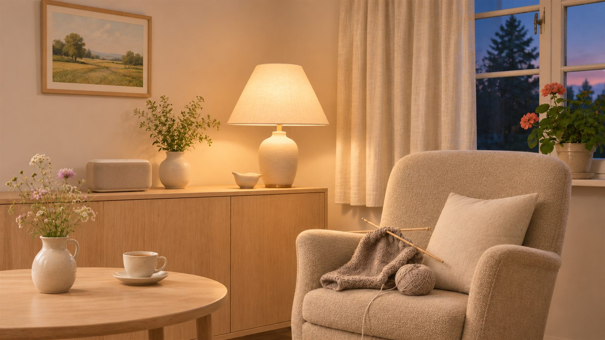

Dengang
Grethes citat i EB Garamond kursiv – kun hendes stemme står sådan.
Del 2 af 6
OversigtDel 2 af 6 · Søvnguiden – dengang og i dag
Idéen, som alt indhold i kampagnen bygger på – og hvordan den lyder og ser ud.
Meget har ændret sig siden 1947. Det, der giver god søvn, har ikke.
Kampagnens big rock er en ny søvnguide. Søvnen er hovedpersonen – dynen er én del af helheden. Rådene fortælles i to lag:


Hver station har de samme fire dele. Derfor kan én station klippes ud til ét opslag, én karrusel, én mail eller ét klip.
Grethes citat i EB Garamond kursiv – kun hendes stemme står sådan.
Hvad vi ved om søvn nu, faktatjekket mod Sundhedsstyrelsen, sundhed.dk, Ældre Sagen og Birgitte Kornum.
Ét lille, konkret råd, læseren kan prøve allerede i aften.
En lun kommentar fra Grethe, som hun er i dag. Den giver glimtet i øjet.
Guiden brydes ned i mindre stykker. Alt indhold peger tilbage på guiden. Hvilke stykker vi har lavet, ser du i content kittet.
Big rock
Web med pdf. Velkomstgave i nyhedsbrevet – ligger ikke offentligt fremme.
Primære afledte
Grethe fortæller døgnet rundt. Quizzen leder hen til guiden.
Sekundære afledte
Reelen, karrusellen og velkomstmailen.
Mikroindhold
Videoannoncen, Grethe-citater og nostalgispørgsmål, der skaber dialog.
Tonen bygger på Aakers (1997) dimensioner af brandpersonlighed.
»Dengang som nu«. Ærlig og jordnær. Vi lover kun det, Ringsted Dun kan holde.
75+ års håndværk og dokumenterede søvnråd. Ekspert uden at belære.
Kontrasten mellem dengang og i dag – og Grethes lune kommentarer.
Vi skriver »du« og »dine nætter«. Vi undgår »ældre« og »seniorer«, alder i overskrifter og store påstande som »skelsættende«. 1950'ernes tidsbillede er stemning, ikke historisk fakta.
Enkel, flad og minimalistisk med enkle illustrationer – bygget på vores designguide og Ringsted Duns Design DNA. Paletten »To temperaturer« skiller dengang og i dag ad: linned og sepia bærer dengang, lyst papir og hvid bærer i dag. Logoets røde farve bruges sparsomt til etiketter, knapper og den røde tråd – en lige linje mellem dengang og i dag.
Papir
#F7F3EC · i dagLinned
#E7D8BE · dengangHvid
#FFFFFF · i dagSepia
#5B4632 · dengangBlæk
#2B2A29 · tekst og natRød
#A6192E · sparsomtLato til alt – overskrifter i Lato Light. EB Garamond kursiv kun til Grethes stemme.
Al tekst har mindst 4,5:1 i kontrast og er mindst 16 px, fordi mange læsere er over 70.
Alle regler for farver, skrift, faste elementer og formater står i designguiden (pdf).